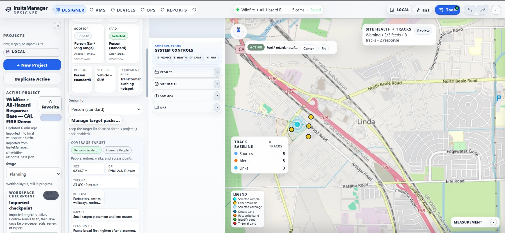
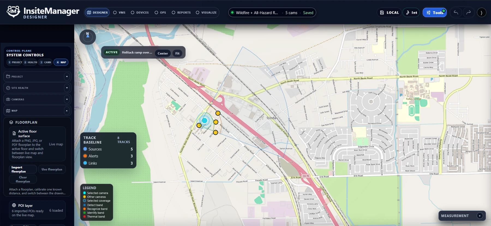
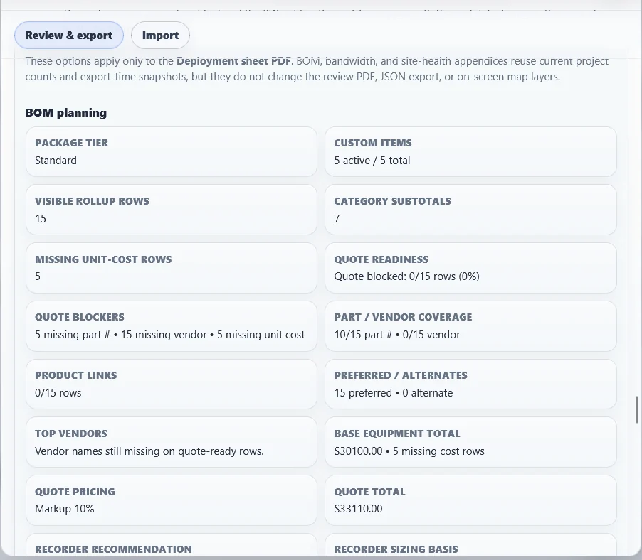
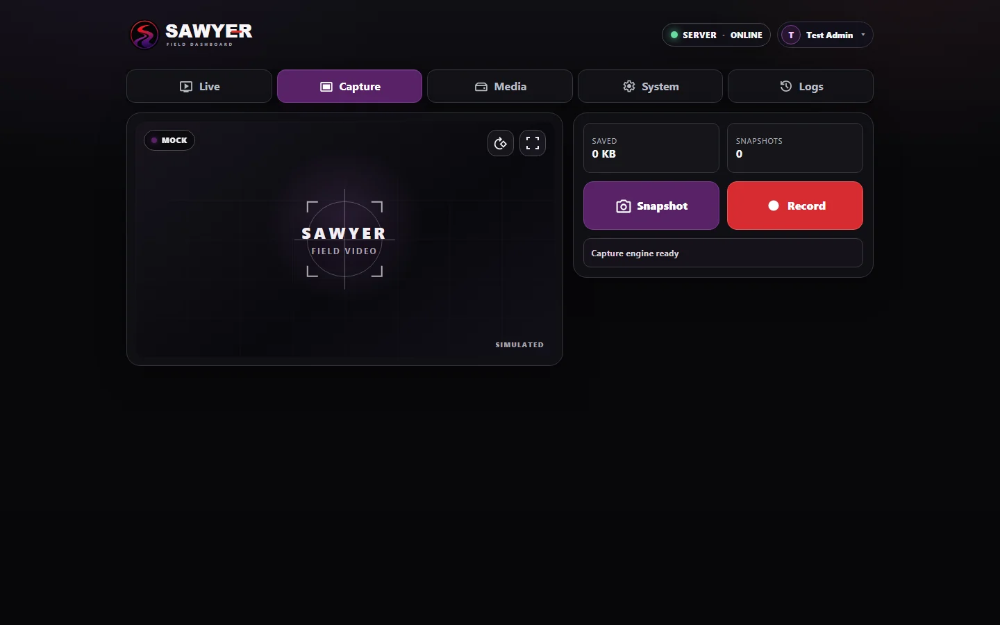
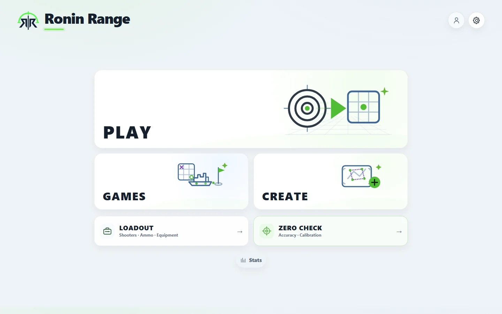
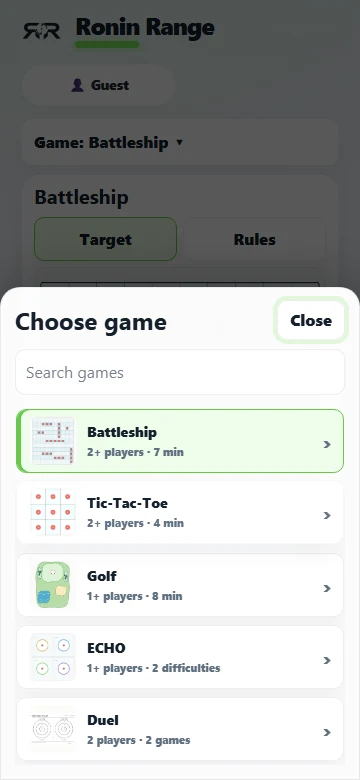
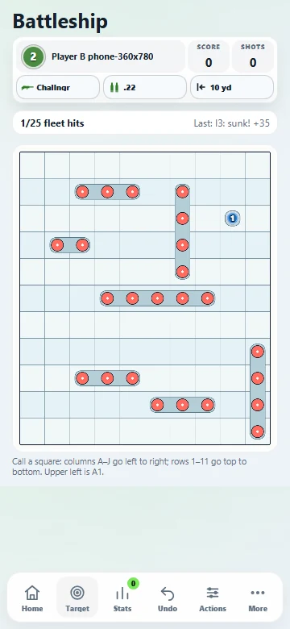

The products, in pictures.
Explore product interfaces from planning to field video and games. Captions identify browser tests and simulated previews; screenshots alone do not establish field acceptance.
From planning to project context.
Designer brings maps, measurements and engineering decisions into a single project workspace. These images show the established planning experience.


View screenshotMap planning and project context in one view.


View screenshotCamera locations, measurements and coverage within a site plan.


View screenshotPlanning estimates and bill-of-materials context.
Understand the device before changing it.
Device discovery, network checks, APIs and logs are part of the workstation workflow. This browser capture shows API endpoint selection and the Changes Locked boundary before a request is sent.
 View screenshot
View screenshot
Endpoint selection and the Changes Locked boundary, before a request has been sent.
Field video built around private networks.
Sawyer helps action-camera users, riders, campers and field teams view compatible cameras over private networks. This is an earlier simulated interface, not a capture from the documented Galaxy S21 Live / Field View checks.


View screenshotSimulated preview; the visible phone-owned Snapshot and Record controls are not accepted Android RTSP recording features.
Play, practice and keep score.
Ronin Range combines local games, target scoring and equipment context in a familiar mobile-friendly interface. Explore the home screen, choose a game and see a Battleship round on a phone-sized interface. The printed target collection shows the companion paper designs.


View screenshotEntry points for Play, Games, Create, Loadout and Zero Check.


View screenshotBrowse the local game picker; Battleship is currently selected.


View screenshotA phone-format Battleship round with a game board, shot markers and player controls.
More views as milestones are accepted.
We add new interface and field captures after reviewing the source, test scope and privacy of each image. Detailed development evidence stays with the application repositories.